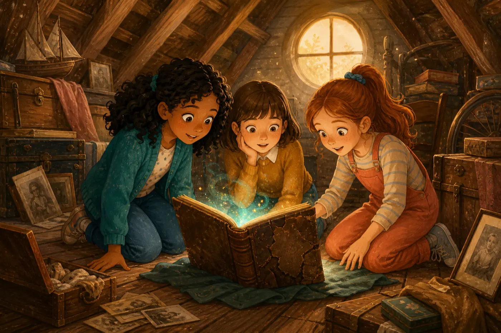
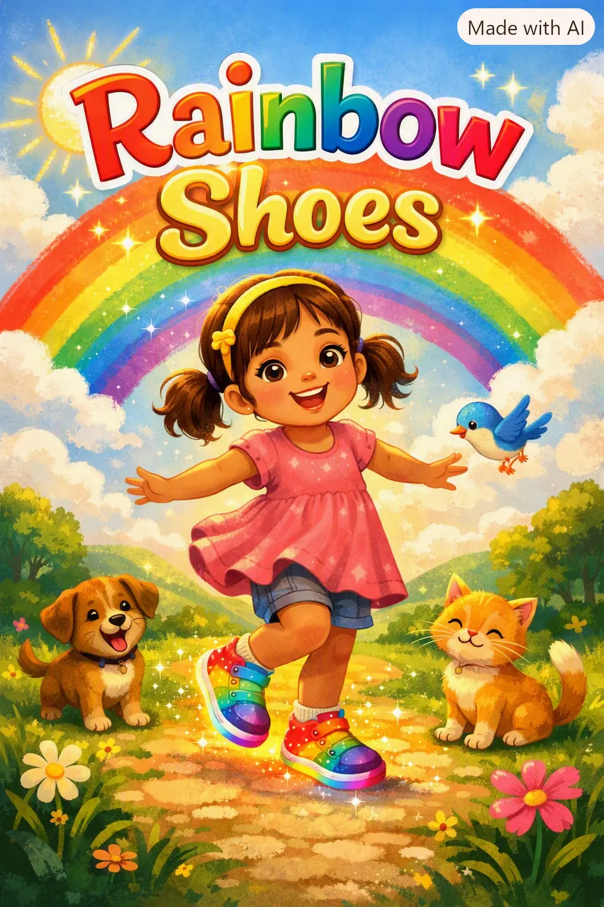
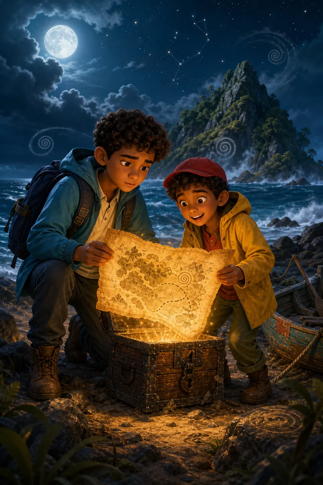

3 books ready
Magic · Mystery · Friendship
The Living Ink
Follow Lila, Charlotte, and Emma as a mysterious book turns their drawings into real adventures.
Pick a series, choose a book, and step into your next adventure.
Pick the world you want to explore. Then you can choose a book from that series.

3 books readyFollow Lila, Charlotte, and Emma as a mysterious book turns their drawings into real adventures.

1 book readyWalk with Mia as her magical shoes change colour and help her brighten the feelings of every new friend.

1 book · 58 scenesFollow two brothers from a stormy basement to a mysterious island as their grandfather’s lost map reveals one secret after another.
Try “Living Ink”, “The Lost Map”, “Ethan and Leo”, or “Rainbow Shoes”.
Read one scene slowly and give Lila, Charlotte, and Emma their own voices.
Look for a word that creates mystery, one that shows courage, and one you want to learn.
If your drawings could come alive, what rule would you make before using the magical pen?